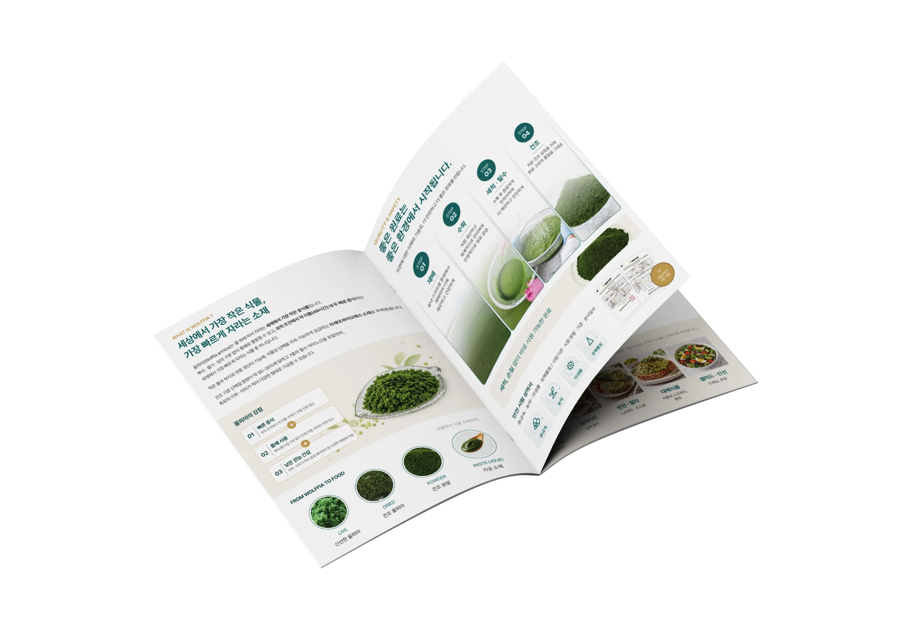
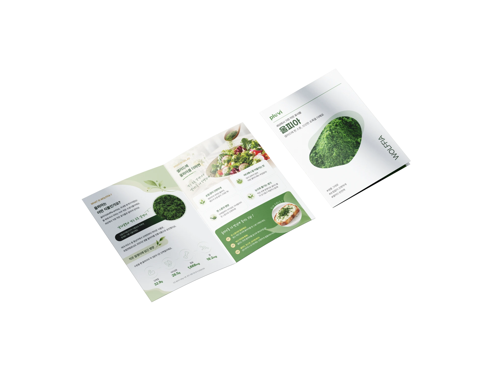

플루비 울피아
제품 카탈로그

about.
식물성 단백 소재 ‘울피아(Wolffia)’를 만드는 플루비의 B2B 홍보물입니다. 거래처가 제품을 한눈에 파악할 수 있도록 2단 접지 리플릿과 8페이지 중철 제본 책자 두 종으로 편집·디자인했습니다. 원료의 특성과 공급 형태, 품질·안전 정보, 생산 기반과 제품·거래 정보를 일관된 흐름으로 지면에 정리했습니다.
작은 수생식물이라는 낯선 소재를 신뢰감 있게 전달하기 위해, 그린 톤의 일관된 비주얼과 단계별 정보 구조로 ‘원료에서 식품까지’ 이어지는 지면을 디자인했습니다.


approach.
표지·내지·백커버 편집디자인부터 인포그래픽·아이콘 구성, 제품·재배 이미지 배치까지 지면 전체를 디자인했습니다. 원료에서 식품 소재까지 이어지는 가공 단계를 한 흐름으로 시각화해, 복잡한 정보도 쉽게 읽히도록 정리했습니다.
구마스튜디오(개인 사업자)로 고객사를 직접 수주해 진행한 프로젝트입니다. 편집디자인과 인포그래픽을 맡았고, 2종 인쇄물 모두 인쇄 발주부터 최종 인쇄용 PDF·편집 원본 납품까지 직접 처리했습니다.
result.
2단 접지 리플릿과 8페이지 중철 제본 책자 두 종을 최종 인쇄용 파일로 납품 완료했습니다. 낯선 원료인 ‘울피아’의 특성과 공정·안전 정보를 거래처가 한눈에 읽어 내려가도록 정리한 것이, 이 작업에서 가장 공들인 지점입니다.